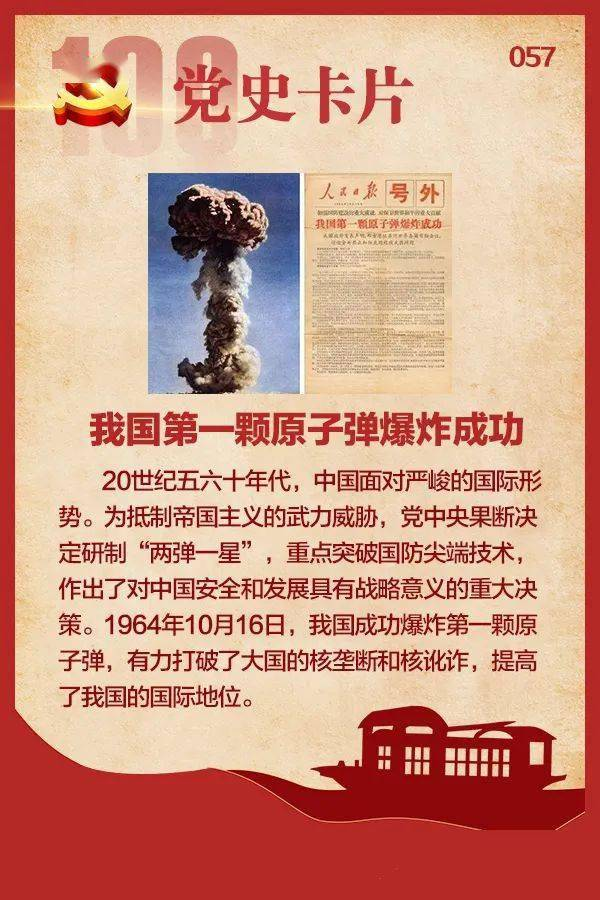
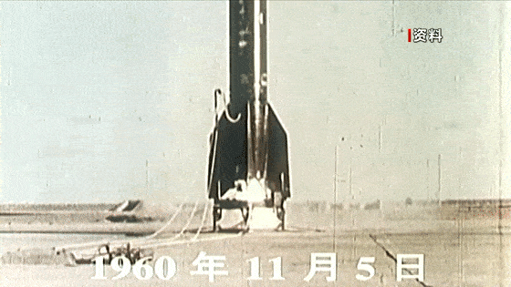
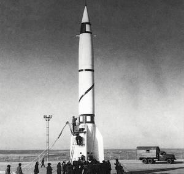
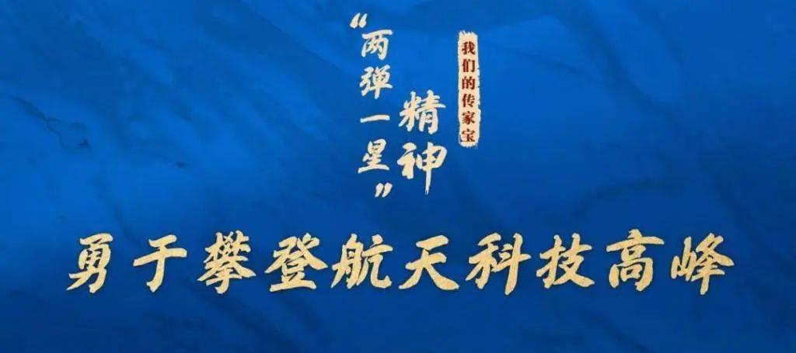
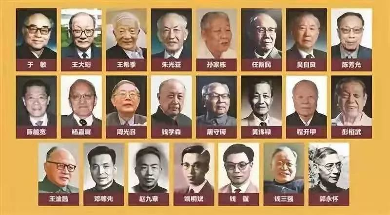
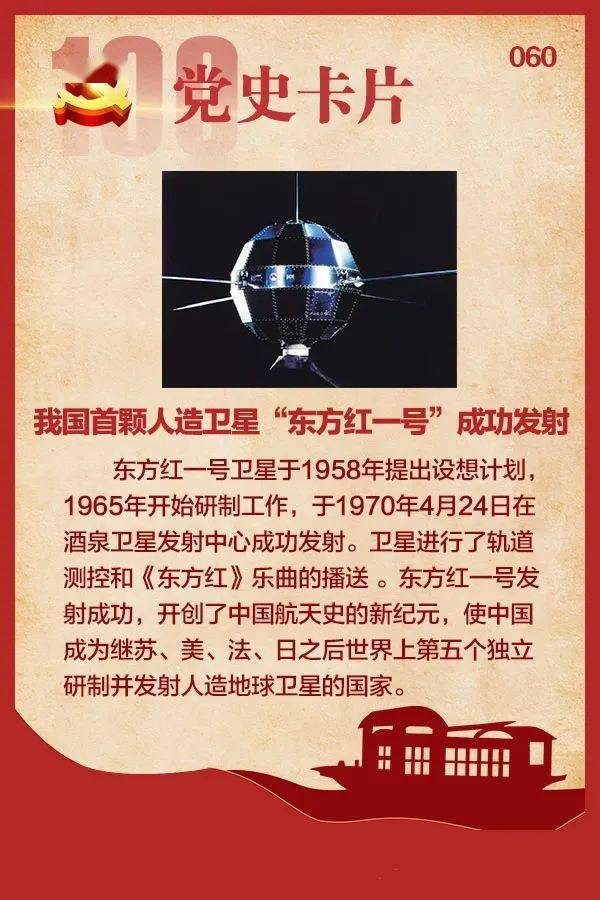
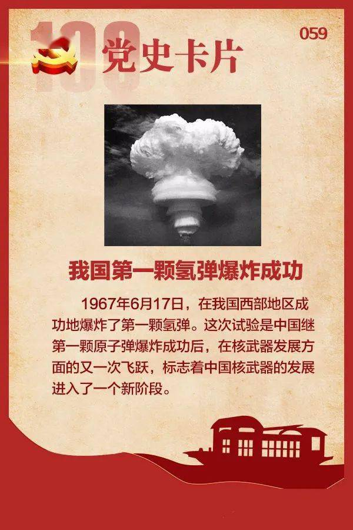

“两弹一星”精神

“两弹一星精神——”热爱祖国、无私奉献，自力更生、艰苦奋斗，大力协同、勇于登攀。
“两弹一星”是新中国伟大成就的象征，是中华民族的骄傲。
“两弹一星”工程对中国的安全和发展具有重大战略意义。
“两弹一星”指核弹（原子弹、氢弹）、导弹和人造卫星。1960年11月5日至1970年4月24日，中国相继成功完成第一枚导弹的发射、第一颗原子弹爆炸、第一颗氢弹空爆试验和第一颗人造卫星发射，取得了举世瞩目的辉煌成就。“两弹一星”精神
“两弹一星精神——”热爱祖国、无私奉献，自力更生、艰苦奋斗，大力协同、勇于登攀。
“两弹一星”是新中国伟大成就的象征，是中华民族的骄傲。
“两弹一星”工程对中国的安全和发展具有重大战略意义。
“两弹一星”指核弹（原子弹、氢弹）、导弹和人造卫星。1960年11月5日至1970年4月24日，中国相继成功完成第一枚导弹的发射、第一颗原子弹爆炸、第一颗氢弹空爆试验和第一颗人造卫星发射，取得了举世瞩目的辉煌成就。“中华民族的骄傲”
核物理学家，中国科学院学部委员。1960年底开始从事核武器理论研究,在氢弹原理突破中解决了热核武器物理中一系列关键问题。2015年被评为感动中国年度人物。
“中国第一颗原子弹”
光学专家，生于江苏吴县。中国光学界的主要学术奠基人、开拓者和组织领 导者。开拓和推动了中国国防光学工程事业。
卫星和卫星返回技术专家，生于昆明，白族。在美国弗吉尼亚理工学院获硕士学位。任航天工业部总工程师，返回式卫星总设计师。
核物理学家，湖北武汉人。1957年后从事核反应堆的研究工作。1994年中国工程院成立，朱光亚出任工程院首任院长。
“中国第一颗导弹”
材料科学与工程专家，生于湖南慈利县。1960年以后从事原子弹、氢弹及核武器的发展研制。
江苏省吴江县人，中国航天科技专家和自动控制专家、自动检测学的奠 基者。领导和参加了卫星总体及自动控制系统研制。
江苏省吴江县人，中国航天科技专家和自动控制专家、自动检测学的奠 基者。领导和参加了卫星总体及自动控制系统研制。
“中国第一颗导弹”
浙江杭州人，汉族，1959年8月加入中国共产党，博士学位，中将军衔，被誉为“中国导弹之父”，“中国火箭之父”，“导弹之王”，2007年被评为感动中国年度人物。
浙江湖州人，火箭技术和结构强度专家。曾任地空导弹型号的副总设计师，远程洲际导弹和长征二号运载火箭的总设计师。
安徽省芜湖人，自动控制和导弹技术专家，中国导弹与航天技术的主要开拓者之一。曾任中国液体战略导弹控制系统的总设计师。
“中国第一颗导弹”
原子核物理学家，中国原子能事业的主要奠基人和组织领导者之一，浙江湖州人，在研究铀核三裂变中取得了突破性成果。
辽宁复县人，长期领导中国人造卫星事业，中国探月工程总设计师。上世纪60年代，孙家栋受命为卫星计划技术总负责人。
航天技术和火箭发动机专家，安徽宁国人，中国导弹与航天事业开创人之一，曾任卫星工程总设计师。
材料学家，生于浙江浦江县。1948年获美国卡内基理工大学理学博士学位。在分离铀235同位素方面作出突出贡献。
“中国第一颗氢弹”
无线电电子学家，浙江黄岩人。1964年至1965年，提出方案并参与研制出原子弹爆炸测试仪器，并为人造卫星上天作出了贡献。
江苏吴江人,核武器技术专家。中国第一颗原子弹研制的开拓者之一、核武器试验事业的创始人之一，核试验总体技术的设计者。
理论物理学家，生于吉林长春。在英国爱丁堡大学获博士学位。曾参与并领导了中国的原子弹、氢弹的研制计划。
“中国第一颗人造卫星”
生于江苏常熟，核物理学家，中国惯性约束核聚变研究的奠基者。是中国核武器研制的主要科学技术领导人之一。
安徽怀宁人，理论物理学家，核物理学家。在原子弹、氢弹研究中，领导了爆轰物理、流体力学、状态方程、中子输运等基础理论研究。
浙江吴兴人，地球物理学家和气象学家。是中国地球物理和空间物 理的开拓者，人造卫星事业的倡导者、组织者和奠基人之一。
“中国第一颗人造卫星”
江苏省无锡人，导弹和航天材料与工艺技术专家，中国导弹与航天材料、工艺技术研究所的主要创建者、领导者。
江苏金坛人。地球物理与空间物理学家、气象学家、航天专家。是中国人造卫星事业的先驱和奠基人。
空气动力学家，生于山东省荣成县。他是中国大陆力学事业的奠基人之一，在力学、应用数学和航空事业方面有卓越贡献。